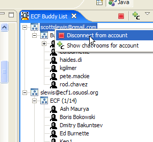
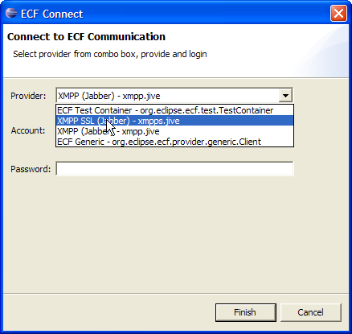

an eclipse technology subproject
New and Noteworthy
0.5.2 Stable Release
Return to ECF download page Return to ECF communication resources page
New and Noteworthy for 0.4.0

|
eclipse communication framework
an eclipse technology subproject New and Noteworthy 0.5.2 Stable Release Return to ECF download page Return to ECF communication resources page New and Noteworthy for 0.4.0 |
|
| |
|
Instant Messaging Improvements |
|
|
Disconnecting from accounts individually |
The context menu for accounts listed in the ECF Buddy List now allow disconnection from that account as well as showing chat rooms available just for that account.  |
|
Username customization for XMPP Chat |
When entering an XMPP chat the user is now prompted for a username for the chat, rather than using the IM username always. The default is, however, still the IM username |
|
XMPP over SSL |
For XMPP servers that support it, ECF now supports XMPP over SSL  |
| |
|
Team Collaboration Improvements |
|
|
Remotely Launch Editors on Team Project Resources |
For Team projects where collaboration participants all have access to the same resources, one can now remotely launch an editor on the chosen resource Each team member must connect the team project to a collaboration group:
|
| |
|
New ECF Provider Implementations |
|
|
Java Messaging Service (JMS) Provider Implementation |
An ECF provider that uses ActiveMQ's implementation of the Java Messaging Service is now available. To download this plugin goto ECF Extras Web Server. PLEASE NOTE: This provider is not yet reviewed and approved under the terms of the EPL and the Apache 2 license and anyone using it are subject to the terms and conditions of both licenses. See the about.html of this plugin for further details. |
|
Zeroconf Discovery Provider Implementation |
An ECF provider implementing the org.eclipse.ecf.discovery API is now available that uses the Zeroconf/Bonjour protocols. To download this this provider goto ECF Extras Web Server. PLEASE NOTE: This provider is not yet reviewed and approved under the terms of the EPL and the Apache 2 license and anyone using it are subject to the terms and conditions of both licenses. See the about.html of this plugin for further details. |
|
Internet Relay Chat Provider Implementation |
An ECF provider implementing the IRC protocol is now available that uses the IRCLib API. To use download this provider goto ECF Extras Web Server. PLEASE NOTE: This provider is not yet reviewed and approved under the terms of the EPL and the Apache 2 license and anyone using it are subject to the terms and conditions of both licenses. See the about.html of this plugin for further details. |
| |
|
RCP Application |
|
|
RCPChat Application |
A new RCP application is available that uses the XMPP provider plugin to create a simple IM client.
To use download this provider goto
|
| |
|
ECF API Additions and Changes |
|
|
Core Support For Transactional State Distribution Protocols |
For reliability, it's frequently desireable to have state distribution done via transactional protocols where either all participants successfully receive a given piece of application state, or all 'abort' and fail back to a known state. This new set of classes allows applications to easily implement 'all-or-nothing' semantics for arbitrary state distribution in ECF applications. ECF has added a new package, org.eclipse.ecf.core.sharedobject that provides an API for application developers to create shared objects whose state is distributed via transactional protocols. So, for example, here is some code that creates a shared object with a Boolean as its state and by inheriting from org.eclipse.ecf.sharedobject.TransactionSharedObject it automatically uses a transactional protocol (two-phase commit) for istributing its state (in this case a Boolean variable value) to replicas.
package org.eclipse.ecf.test.sharedobjects;
import java.util.HashMap;
import java.util.Map;
import org.eclipse.ecf.core.SharedObjectDescription;
import org.eclipse.ecf.core.identity.ID;
import org.eclipse.ecf.core.sharedobject.TransactionSharedObject;
public class TestTransactionSharedObject extends TransactionSharedObject {
Boolean state = null;
public TestTransactionSharedObject(Boolean val, int timeout) {
super(timeout);
state = val;
}
public TestTransactionSharedObject() {
super();
state = null;
}
protected SharedObjectDescription getReplicaDescription(ID receiver) {
// This method is executed on primary to determine initial state
// for replicas
// include primary state in properties
Map properties = new HashMap();
properties.put("state", state);
return new SharedObjectDescription(getID(), getClass().getName(),
properties);
}
protected void initialize() {
// This method is executed on both primary and replicas
super.initialize();
// Only set state via properties if we are replica (not primary)
if (!isPrimary()) {
Map properties = getConfig().getProperties();
if (properties != null) {
state = (Boolean) properties.get("state");
}
}
}
}
|